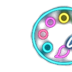

告別簡報排版苦工，解鎖人機協作效率
科技兔 (Eason) · 2026 年 7 月
想讓 AI Agent 產出高品質簡報，必須建立合約式規則

當我們請 AI 轉簡報時，它並不知道它該長成什麼樣子。因此必須制定底線：
告訴 AI：我需要 Canva 質感的 Keynote 相容簡報，風格偏向簡約、科技與專業。
- 路線是「Keynote 可開啟的 Canva 質感 PPTX」
- 主色調：黃色；輔助色調：黑色、深灰、白色文字
- 要有科技感、專業感、設計感，避免每頁都長得一樣
- 視覺上可用：抽象幾何、流程卡、比較表，避免只有標題加 Bullet List
💡 實務效果：AI 在生成時會主動使用卡片組件裝飾，不會輸出毫無層次感的純文字頁面。
透過程式碼直接輸出實體 PPTX 檔，方便後續在電腦端二度美化編輯。
為了確保生成的簡報檔案在技術與版權上毫無漏洞：
.pptx 檔，方便 Keynote/PowerPoint 讀取。
- 優先輸出 .pptx，不直接用 Keynote 製作，以程式產生
- 不使用外部來源圖片、網站截圖，除非明確要求
- 完成後自我查核：確認壓縮包完整、投影片無元素重疊或字擠到畫布外
💡 實務效果：Codex 在背景生成後會主動檢核程式碼排版，如果警告能修復就會自動修復。
拉動滑桿，體驗 AI 協同創作帶來的震撼提速
建立起合約規則後，每次轉檔只需輕鬆四步
人機共助，點燃智慧工作流的效率革命
感謝聆聽 · 歡迎交流討論